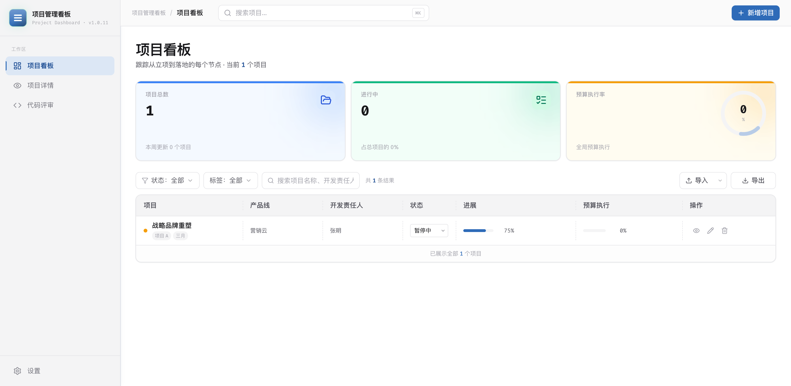
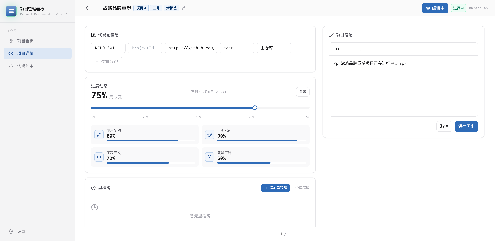
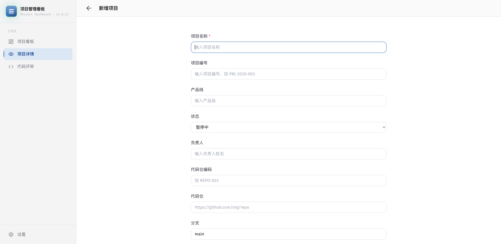
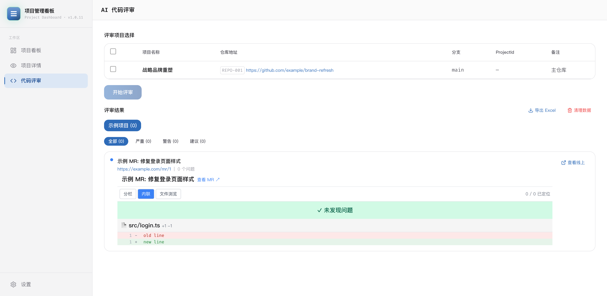
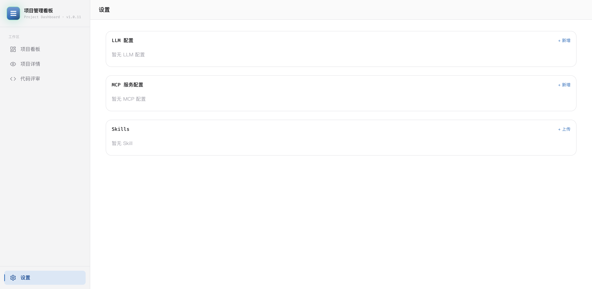

根因：6 处仓库 handler 在 updateProject 时调用 .filter(r => r.url.trim())，空 URL 的新仓库立即被过滤丢弃。然后 useEffect（line 71-78）因 project 引用变化重新从持久化数据初始化 editRepos，新行消失。
修复内容：
updateProject.filter(r => r.url.trim())if (!isReadOnly) { const cleaned = editRepos.filter(r => r.url.trim()); updateProject(...) }验证：Chrome DevTools MCP — 添加新仓库 → 填写所有字段 → 切换模式 → 确认持久化 → 空 URL 清理验证 → 0 console errors
| 测试 ID | 区域 | 描述 | 优先级 |
|---|---|---|---|
| TC-DETAIL-007 | 代码仓 CRUD | 添加代码仓完整流程（填写所有字段，保存，验证持久化） | P0 |
| TC-DETAIL-008 | 代码仓 CRUD | 修改代码仓字段（修改 URL/分支/备注，验证持久化） | P1 |
| TC-DETAIL-009 | 代码仓 CRUD | 删除代码仓 | P1 |
| TC-DETAIL-010 | 代码仓 CRUD | 空 URL 退出编辑时自动清理 | P0 |
| TC-DETAIL-011 | 预算来源 CRUD | 添加预算来源 | P0 |
| TC-DETAIL-012 | 预算来源 CRUD | 修改预算来源 | P1 |
| TC-DETAIL-013 | 预算来源 CRUD | 删除预算来源 | P1 |
| TC-DETAIL-014 | 团队成员管理 | 添加团队成员 | P0 |
| TC-DETAIL-015 | 团队成员管理 | 删除团队成员 | P0 |
| TC-DASH-006 | 状态持久化 | 状态修改后刷新页面持久化验证 | P0 |
| TC-DETAIL-016 | 业务角色 | 战略团队中业务责任人角色展示 | P1 |





| 验证项 | 命令/方式 | 结果 |
|---|---|---|
| 单元测试 | npx vitest run | ✅ 148/148 PASS (20 files, 3.84s) |
| TypeScript 编译 | npx tsc --noEmit | ✅ 零错误 |
| 控制台报错 — Dashboard / | Chrome DevTools MCP | ✅ 0 error |
| 控制台报错 — /project/:id | Chrome DevTools MCP | ✅ 0 error |
| 控制台报错 — /project/new | Chrome DevTools MCP | ✅ 0 error |
| 控制台报错 — /code-review | Chrome DevTools MCP | ✅ 0 error |
| 控制台报错 — /settings | Chrome DevTools MCP | ✅ 0 error |
| 存量 E2E 测试 | git diff tests/e2e_dashboard.py | ✅ 未修改 |
| E2E 用例文档 | 29 条测试用例全覆盖 | ✅ 29 条 |
| 文件 | 变更内容 |
|---|---|
src/types/index.ts | Repository 新增 projectId?: string；Project tag: string → tags: string[] |
src/db/projectDao.ts | 新增 parseTags() 向后兼容；create/update/upsert 支持 tags JSON |
src/db/index.ts | insert 时 JSON.stringify(project.tags) |
src/data/seedData.ts | 默认 status='paused', totalAmount=0, usedAmount=0, tags: ['项目 A','三月'] |
src/components/ProjectTable.tsx | 新增"状态"列 + <select> 下拉；列头"负责人"→"开发责任人"；多标签 pill 展示；onStatusChange prop |
src/components/Sidebar.tsx | 新增"项目详情"导航项 + startsWith 高亮匹配 |
src/components/Header.tsx | bg-white → bg-surface-subtle |
src/components/ProjectSelector.tsx | 新增分支/ProjectId/备注列；代码仓编码 badge |
src/pages/Dashboard.tsx | 月份筛选→标签多选筛选；handleStatusChange；导入导出更新 |
src/pages/ProjectDetail.tsx | 代码仓 code/ProjectId 编辑+展示；多标签 pill 展示+逗号编辑；Bug修复：添加代码仓filter/useEffect重初始化；新增团队成员删除按钮 |
src/pages/ProjectForm.tsx | 默认 status='paused', totalAmount=0；导航栏 bg-surface-subtle |
src/pages/CodeReview.tsx | bg-surface-elevated → bg-surface-subtle |
src/pages/Settings.tsx | bg-surface-elevated → bg-surface-subtle |
src/constants/project.ts | IMPORT_REQUIRED_HEADERS "负责人"→"开发责任人" |
src/constants/project.test.ts | 测试断言更新 |
src/components/__tests__/ProjectTable.test.tsx | 7列、tags[]、状态列测试更新 |
| Commit | 描述 |
|---|---|
| 60fa4b4 | 数据模型变更：Repository.projectId, tags[], seed data 默认值 |
| 1a98a06 | 全部功能实现：状态列, 开发责任人, 侧边栏路由, repo ProjectId UI, 多标签, 代码评审列, 全局样式, 测试 |
| 2c82fc7 | E2E 测试用例文档 + 测试报告 + 5 张截图 |
| 4d7e46c | HTML 验证报告 |
| — | Bug修复：添加代码仓 .filter() 导致新行消失 + 团队成员删除按钮 + 29条E2E用例 |
12 项需求（8 项功能 + 4 项非功能）全部实现并验证通过。
1 个 Bug 已修复（"添加代码仓"按钮无效 — filter 导致新行被丢弃 + useEffect 重初始化）。
148 单元测试 + 0 TS 错误 + 0 控制台报错 + 5 张截图 + 29 条 E2E 测试用例。
报告生成时间: 2026-07-06 21:45 GMT+8 | 由 Claude Code 自动生成